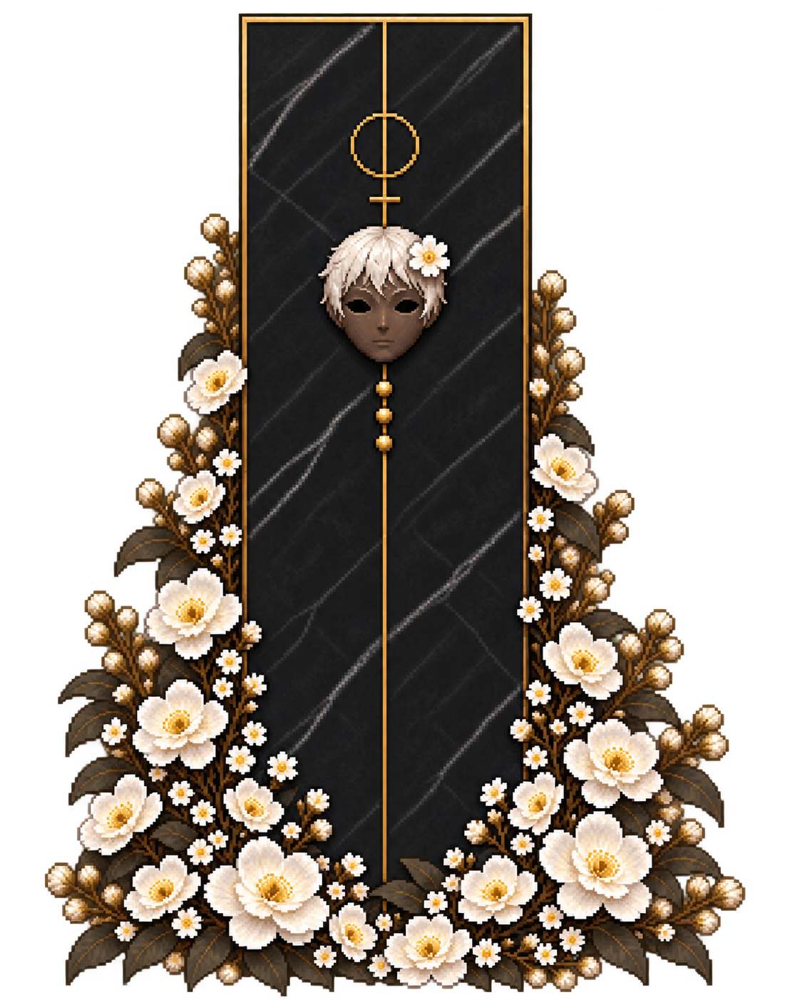
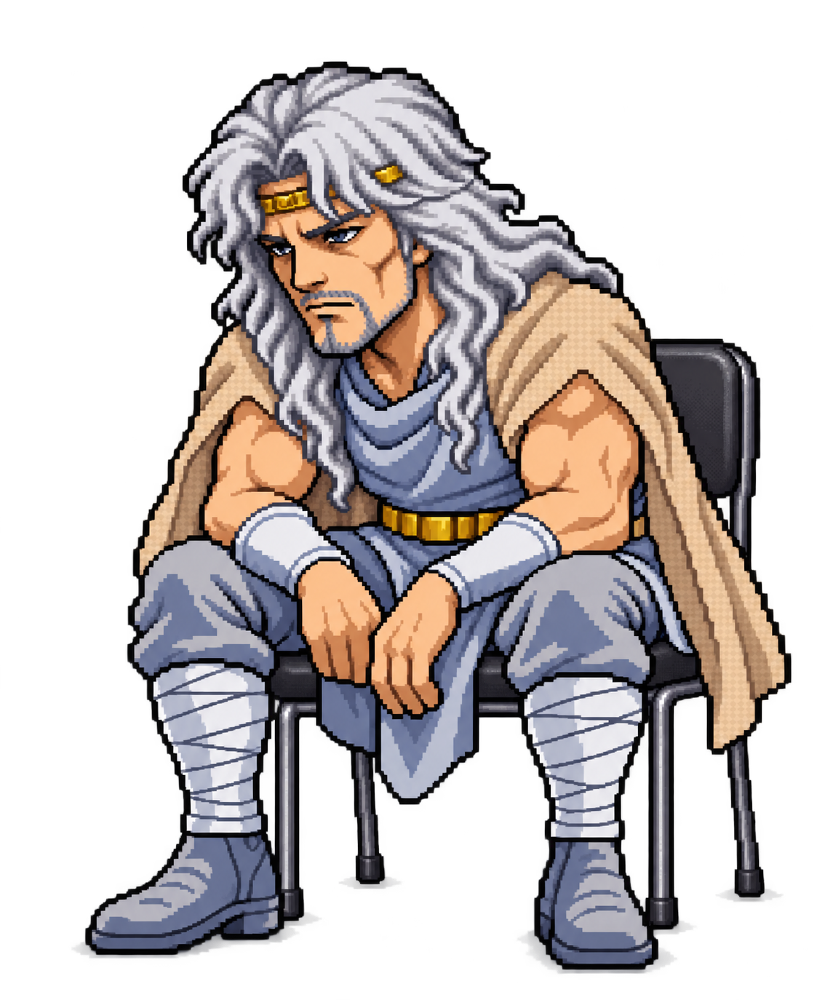
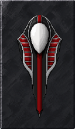
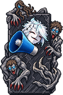
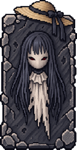
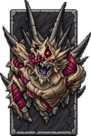
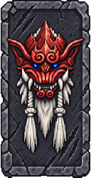
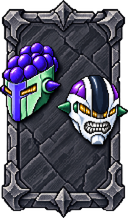
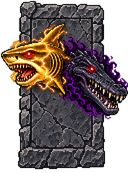
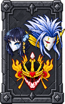

罪業 0：因子獲得量 ×1（＋0%）


所持因子 0 Rd
0の条件は使いません。両方指定すると先に達した条件で休憩し、休憩後は自動出撃します。設定変更で出撃のカウントをリセットします。
雇用済みの仲間がいません。仲間タブで雇用してください。
このブラウザに保存されたYggClickerの進行・表示設定・自動バックアップ・読み込み前バックアップを削除し、初期因子0Rdからやり直します。
この操作は取り消せません。書き出したセーブファイルや、他のゲームのデータは削除しません。
フォルダや公開先を移す前に書き出し、移動先で読み込むと引き継げます。
自動保存は10秒ごとと購入・対象変更時。読み込み前の進行は別途バックアップします。別の端末やブラウザには自動同期されません。
このゲームを遊ぶにはJavaScriptを有効にしてください。
今回までの総生産因子から罪業と大罪を獲得し、恒久強化を選びます。購入完了後に次周へ進みます。

行動値×1.04 / Lv

回避強度×1.04 / Lv

命中強度×1.04 / Lv

攻撃強度×1.04 / Lv

暴走圧の発生量×0.95 / Lv

C収入全般＋1% / Lv

最大HP×1.04 / Lv

防御強度×1.04 / Lv